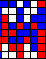

Web-basierte Simulation für Wissenschaft and Bildung
Die Projekt-Website Simulation for Education (Sim4edu) unterstützt web-basierte Simulation mit Open-Source-Technologien für Wissenschaft and Bildung. Sie stellt sowohl Simulationstechnologien als auch eine Lern-Simulations-Bibliothek zur Verfügung. Das Ziel des Projekts ist es, verschiedene Arten der Simulation zu unterstützen, inklusive Diskrete-Ereignis-Simulation, Raster-Raum-Modelle im Stil von NetLogo (und Zelluläre-Automaten-Modelle), und agenten-basierte Simulation.
Im Gegensatz zu traditionellen Simulationstechnologien, können web-basierte Simulationen, insbesondere wenn sie mit JavaScript implementiert sind, in jedem Web-Browser ausgeführt werden, nicht nur auf Desktop-PCs, sondern auch auf mobilen Geräten wie Tablets und Smartphones. Dies erlaubt es, Simulationen mit Hilfe von Web-Links zu veröffentlichen und sie auf einfache Weise für alle überall auf der Welt zugänglich zu machen.
Beispiele von Ad-hoc-Simulationsprogrammen
... die auf keinem Simulations-Paradigma oder -Framework basieren.
- Elevator Saga
- Programmieren lernen durch die Programmierung eines Aufzugs.
- JavaScript Ameisen
- Eine Simulation darüber wie Ameisen Nahrung fnden und sie zurück ins Nest bringen. Wenn eine Ameise Nahrung fndet, hinterlässt sie auf dem Weg zurück ins Nest eine Spu aus einer chemischen Substanz, die im Laufe der Zeit verdunstet. Andere Ameisen folgen einfach dieser Spur bis sie die Nahrung finden.
- Kreisverkehr
- Eine Mikrosimulation des Verkehrsflusses in einem Kreisverkehr.
Beispiele für Diskrete Ereignis-Simulation (DES)
... mit inkrementeller Zeitprogression.
- SIR-Krankheits-Verbreitungs-Modell
- Ein epidemiologisches Modell der Infektionsdynamik einer ansteckenden Krankheit in einer geschlossenen Population. Siehe auch ein kontinuierliches SIR-Modell.
... mit ereignisbasierter Zeitprogression.
- Lagerverwaltung
- Ein Lagerverwaltungssystem mit einem kontinuierlichen Wiederbeschaffungsverfahren.
- Drive-In
- Die Auftragsverarbeitungs-Aktivititäten eines Drive-In-Restaurants umfassen die Auftragsannahme am Bestellschalter, die Auftragsbearbeitung (Zubereitung) in der Küche und die Abholung am Ausgabeschalter.
- Lengnicks Basis-Ökonomie
- Haushalte spielen die Rollen von Arbeitnehmern and Konsumenten, während Firmen die Rollen von Arbeitgebern und Produzenten spielen.
Beispiele für Gitterraum-Modelle
... mit konstant inkrementierter Simulationszeit.
- Tratsch-Modell
- Ein zelluläres Automatenmodell über das Problem der Verbreitung von Tratsch.
- Schellings Seggregationsmodell
-  Ein Wohngebiet wird von Anwohnern bewohnt, die zu verschiedenen Bevökerungsgruppen gehören. Alle Anwohner prüfen periodisch auf der Basis ihres Grads an Toleranz gegenüber andersartigen Nachbarn, ob sie mit ihrer Nachbarschaft zufrieden sind. Wenn sie es nicht sind, ziehen sie an einen anderen Ort, wo sie mit der Nachbarschaft zufrieden sind, oder sie verlassen das Gebiet, wenn sie keine geeignete Nachbarschaft finden.
Beispiele für Kontinuierliche Simulation
... mit kontinuierlichen Zustandsänderungen auf der Basis einer inkrementellen Zeitprogression.
- Sonnensystem
- Implementiert mit CSS-3D-Animationen.
- Galaxie
- Eine spirale Galaxie mit 5000 Sternen (von Jonas Wagner, 2010-08-18).
- World3
- Ein System-Dynamics-Simulationsmodell der Interaktionen zwischen Bevölkerung, industriellem Wachstum, Nahrungsmitelproduktion und Grenzen im Ökosystem der Erde. Mit Insight Maker rekonstruiert. Ursprünglich auf den Club of Rome zurückgehend, siehe The Limits to Growth.